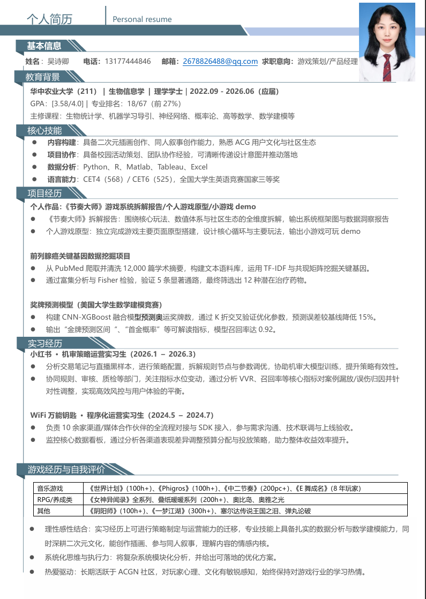

华中农业大学（211）· 生物信息学 · 本科

意向岗位
游戏策划
产品经理
26级应届毕业生（本科），211生物信息学，绩点专业前27%，扎实数理统计基础。热爱二次元与游戏，具备策划拆解、原型制作、编程实现与美术设计能力。
其它本科选修课程：离散数学、Web开发、C++、数据结构、SQL
全国大学生英语竞赛三等奖；MathorCup大数据建模比赛、美国大学生数学建模比赛建模手。
证书与其它履历补充：计算机二级证书(MsOffice)、高中数学教资；22年新高考一卷语文与英语学科均分132
完整简历 (PDF)
(页面内的PDF可能未及时更新，请以官网/软件投递简历为准)
社会实践 & 校园活动
2022.09 — 2023.06
班级文娱委员
2022.09 — 2022.11
校园舞蹈大赛
2022.12 — 2023.02
寒假社会实践·队长
2024.08 — 2024.09
暑期社会实践·副队长
←